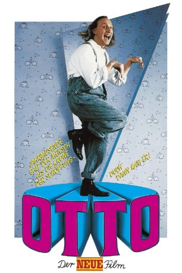

#9323 Otto 2 - Der Neue Film
 
 IMDB-Wertung: 5.8 / 10
IMDB-Wertung: 5.8 / 10  Metascore: 0
Metascore: 0 
Er ist Ostfrieslands Antwort auf Rambo und steht zwischen zwei Welten, zwei Frauen und zwei Tieren. Während er versucht, einen Hund mit Beißhemmung und eine Katze mit selbstmordabsichten zu heilen, läuft ihm der Traum seiner schlaflosen Nächte über den Weg: Gaby - schön wie eine Elfe, eiskalt wie eine Hundeschnauze.Otti balzt wie ein brünftiger Hirsch, doch Gaby denkt nur an Amboss, den Rabiator - ein echter Kerl mit Muckis aus Stahl und einem Hirn aus Schaumgummi.
Jahr: 1987
Dauer: 80 Minuten
FSK: 0
Land: West-Deutschland Studio: Tobis FilmkunstTonspuren:
Untertitel:
Auflösung: 1080p (1920x1080) Größe: 6430 MB
Genre: Komödie
Regisseur: Xaver Schwarzenberger,  Otto Waalkes
Otto Waalkes
Drehbuch: Bernd Eilert
Soundtrack: Thomas Kukuck, Christoph Leis-Bendorff, Otto Waalkes
Darsteller:
- Otto Waalkes als
- Anja Jaenicke als Anna
- Ute Sander als Gabi Drösel
 Friedrich Schoenfelder als Professor Edelsen
Friedrich Schoenfelder als Professor Edelsen- Dirk Dautzenberg als Aettich
- Joachim Kemmer als Schmieriak
- Georg Blumensaat als Amboss
- Ronald Nitschke als Polizist
- Karl Schulz als 1. Möbelpacker
- Hans Martin Stier als 2. Möbelpacker
- H.H. Müller als Begleiter Edelsen
- Dieter Landuris als 1. Fußballfan
- Thomas Ahrens als 2. Fußballfan
- Claus-Peter Damitz als 3. Fußballfan
- Urs Remond als 1. Schönling
- Johannes Baasner als 2. Schönling
- Beate Menner als TV-Ansagerin
- Dieter Dost als Stationsvorsteher
- Horst Tomayer als Jäger
- Wolfgang Windel als Reporter
- Wilken F. Dincklage als Opernsänger
- Pablo Kamolz als Zeitungsverkäufer
- Dieter Ziesenhenne als Eisverkäufer
- Marc Drüner als Kürpartner
- Martin Dreyer als Eishockeyjunge
- Regina Paul als Dicke Frau
- Frank Kellerhoff als Schiedsrichter
- Detlef Brühahn als 1. ZZ-Top
- Martin Brühahn als 2. ZZ-Top
- Philip Froben als Liebespaar (Mann)
- Nine Nielebock als Liebespaar (Frau)
- Teh Weima als Chinese
- Yasuko Truppe als Chinesin
- Hartmut Westermann als 1. Leibwächter
- Lutz Eitner als 2. Leibwächter
- Roland Briegert als 3. Leibwächter
- Rex Kutzner als 4. Leibwächter
- Boris Rentz als 5. Leibwächter
- Norbert Sosna als 6. Leibwächter
- Joachim Wagner als 1. Helfer
- Jürgen Hartmann als 2. Helfer
- Rainer Peets als Polizist vor Kino
- Hagen Buchwald als Brandymann
- Sabrina Eilers als 1. kicherndes Mädchen
- Alexa Sommer als 2. kicherndes Mädchen
- Sky El Fouly als Junge im Fahrstuhl
- Nina Steube als Kleines Mädchen
- Marion Manthey als Mädchen mit Kätzchen
- Preussen Berlin als Eishockeymannschaft
- Peter Kirchberger als Amboss / Stationsdurchsage / Die sechs Leibwächter (uncredited)
Datei: X:\6-Hexalogie(A-Z)\Otto\Otto 2 - Der Neue Film (1987, FSK0, 1920x1080).mkv seit 27.07.2018
Festplatte: HD Collection-3(N-Z)-6(A-Z)
 Es gibt insgesamt 9 Filme in der Gruppe '6-Hexalogie(A-Z)\Otto'
Es gibt insgesamt 9 Filme in der Gruppe '6-Hexalogie(A-Z)\Otto'